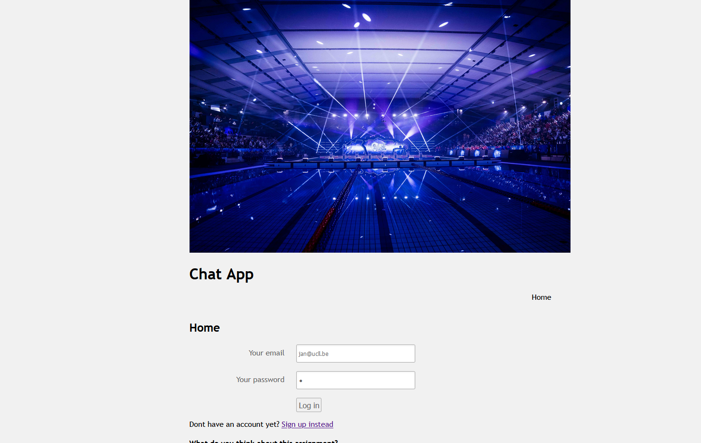
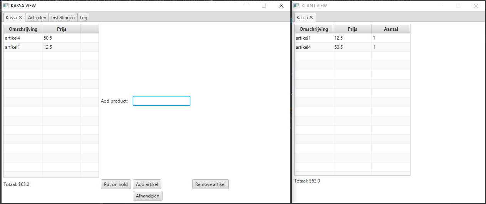
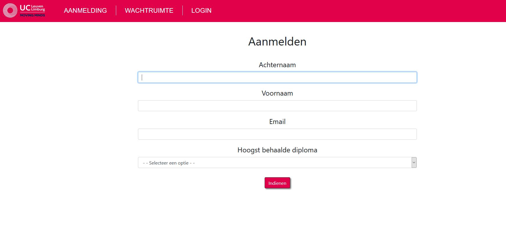
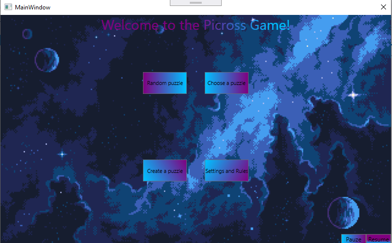
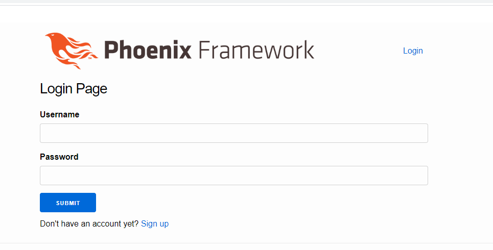
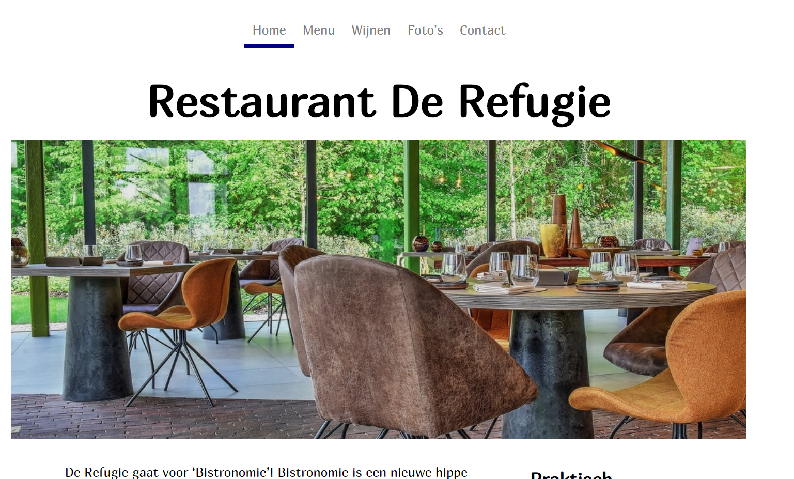

Mijn Projecten
- Alle
- Java
- Web
- Andere

User app Webontwikkeling 4
Een chat applicatie om met verschillende gebruikers te chatten en vrienden toe te voegen. Gebouwd met Java Web


Project ticket Queue
Een Ticketing systeem voor de opendeurdag van de UCLL. Gebouwd met Java Web

Picross Project
Een picross spel volgens het MVVM-patroon. Gebouwd met C# en WPF

Website met Phoenix framework
Een Web applicatie waarin gebruikers honden en katten kunnen bijhouden. Gebouwd met het Phoenix Framework en Elixir

Statische Website
Een Statische website gebouwd met Html en Css